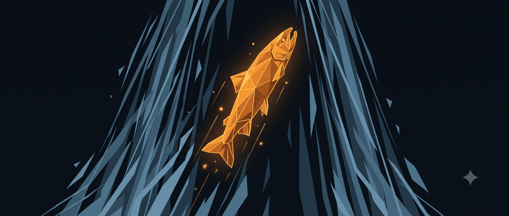

Tất cả những gì bạn cần để học giỏi
Hồi đó, mình nhiều giấy khen lắm, nhưng được giải gì, thi kỳ thi nào, học kiến thức gì, mình đều quên hết rồi. Sau cùng, mình chỉ nhớ rất rõ cảm giác phải chiến thắng sự lười nhác bên trong, chui ra khỏi chăn và thức khuya dậy sớm vào giữa mùa đông để vùi mặt vào sách vở.
Chắc hẳn ai cũng từng trải qua những giai đoạn như thế. Vậy nên, bài viết này dành cho những bạn đang phải đối mặt với những sóng gió trong quá trình học tập và ôn tập cho các kỳ thi. Mình sẽ kể cho các bạn nghe tất tần tật về chặng đường học thuật đầy gập ghềnh của mình, suy nghĩ của mình trong chuyện học tập, “chìa khóa” để chinh phục những mục tiêu khó khăn và từ học qua sách vở đến học từ đời sống.
Mình hy vọng nó sẽ khiến ai đó suy nghĩ tích cực hơn, có những trải nghiệm suôn sẻ và “bơm” cho ai đó chút động lực để tiếp tục bước đi trên chặng đường học tập của mình.
MÌNH HỌC NHƯ THẾ NÀO?
1. HỌC NHƯ “CÁ HỒI VƯỢT THÁC”
Nếu có thể tóm tắt hành trình học tập của mình bằng một câu quotes thì sẽ là:
“Chúng ta tạo nên bầu trời của chính mình, chúng ta tạo nên những giới hạn của bản thân. Nếu bạn tin rằng điều gì là bất khả thi, nó sẽ trở nên bất khả thi với bạn, không phải với người khác. Vậy nên niềm tin và suy nghĩ của bạn về điều khả thi sẽ là thứ giúp bạn làm được điều đó.”
Trích từ sách “Bí mật tỷ đô” của tác giả Rafael Badziag
Hoặc bằng một dòng mình đã viết trong yearbook của khối khi tốt nghiệp cấp ba:
“I love salmons, because they always have to swim upstream in their lives”.
hglinh
Nghĩa là:
“Tớ yêu những chú cá hồi, bởi chúng luôn luôn phải bơi ngược dòng trong suốt cuộc đời mình.”
“Bơi ngược dòng” với mình là khi bạn luôn lựa chọn một mục tiêu rất khó khăn, nằm ngoài vùng an toàn của bạn. Sau sự lựa chọn ấy là quá trình biến điều tưởng như không thể trong mắt người khác, thành điều có thể đối với bạn. Tất nhiên, quá trình này vô cùng gian nan và buộc bạn phải đánh đổi nhiều thứ. Tuy nhiên, bạn sẽ giỏi lên rất nhanh và đạt được những điều có khả năng làm thay đổi cuộc đời bạn.
Quay lại với chuyện học của mình, thì mình cực kỳ ngưỡng mộ những bạn là học sinh giỏi toàn diện, vì mình chưa từng là một học sinh như vậy. Mình cũng không tập trung học giỏi một môn học nhất định từ bé đến lớn.
Mình yêu môn Văn nhất. Yêu đến mức đọc vô số tiểu thuyết kinh điển thế giới khi còn học cấp một. Yêu đến mức từ khi bắt đầu biết viết cũng là lúc bắt đầu viết truyện. Viết cuốn truyện đầu tay, đăng lên trên mạng cũng được hơn 100,000 lượt đọc. Vì vậy, thành tích của mình trong môn Văn thường không kém.
Tuy nhiên, từ lớp một đến lớp tám, mình chỉ tập trung học Toán với mục tiêu thi vào chuyên Toán. Mình bắt đầu bằng con số 0 như thế đấy. Từng chút một, từng chút một xây dựng tư duy logic, tư duy phân tích, tư duy hệ thống, làm không biết bao nhiêu cuốn sách Toán nâng cao, thi không biết bao nhiêu kỳ thi học sinh giỏi.
Đến khi chỉ còn một năm trước kỳ thi chuyên, mình rũ bỏ mọi thành tích trước đó, xắn tay áo lên học tiếng Anh từ đầu với mục tiêu đỗ chuyên ngữ. Lúc đó, mình học tiếng Anh cực kỳ kém. Ngoại ngữ không phải thế mạnh của mình. Vậy là, mình lại bắt đầu từ con số 0. Mình chuyển hướng từ môn mình học giỏi nhất lớp đến môn mình học tệ gần nhất lớp. Cuối cùng, sau một năm miệt mài ôn tập, mình may mắn đỗ chuyên Nga.
Khi đỗ chuyên Nga, mình chưa tập trung vào học tiếng Nga ngay, mà dành một năm rưỡi để tìm ra điều mình thực sự muốn làm khi tốt nghiệp cấp ba là gì. Loay hoay suốt một thời gian dài như thế, phải đến giữa năm lớp 11, mình mới học tiếng Nga lại từ đầu.
Quay về con số 0 lần nữa. Trong hơn hai tháng, mình từ đứa đứng không vững trong top 10, được lên top 3 và đạt huy chương Bạc trong kỳ thi HSG Duyên hải và Đồng bằng Bắc Bộ môn tiếng Nga, trở thành thành viên đội tuyển HSG quốc gia và cuối cùng là đạt học bổng toàn phần du học Nga.
Bây giờ, mình lại trở về con số 0 khi bước ra môi trường quốc tế, hầu như không có bất kỳ lợi thế nào khi so sánh với những sinh viên siêu giỏi đến từ các nước khác và cả sinh viên bản địa với thế mạnh lớn về ngôn ngữ.
Còn nhiều lắm những lần mình học kiểu “cá hồi vượt thác” như thế trong suốt mười hai năm ngồi trên ghế nhà trường. Đây là đặc điểm đầu tiên trong phong cách học của mình.
2. BỐ MẸ RÈN CHO MÌNH KỸ NĂNG TỰ HỌC
Bố mẹ mình đều làm việc trong ngành giáo dục, đều là thạc sỹ các môn khoa học tự nhiên và đều tốt nghiệp từ một trường đại học vừa danh giá vừa khó nhằn ở Việt Nam. Đấy là đích đến. Còn với xuất phát điểm của bố mẹ mình thì cái đích đó dường như là điều không thể. Bố mẹ hay bảo mình rằng kỹ năng tự học (trong sách vở và trong đời sống) đã đưa bố mẹ đến ngày hôm nay.
Vậy nên, ngay từ khi còn bé, mẹ đã chú tâm rèn cho mình khả năng tự học. Mình học suốt ngày, thức đêm học, nghỉ hè cũng học. Vào mùa hè kết thúc lớp ba thì mình đã học xong sách Toán nâng cao của lớp bốn. Mình học bằng cách tự đọc sách, tự làm bài, tự giải quyết các bài khó và mẹ chỉ chịu giúp mình khi mình sắp phát điên. Hồi đó, mẹ mình nghiêm khắc vô cùng, đến mức mà mình luôn luôn nghĩ rằng bất kỳ khi nào không học bài hoặc đọc sách đều là lãng phí thời gian. Mình luôn trải qua các quãng thời gian rảnh rỗi chìm trong nỗi sợ trở thành kẻ lười biếng.
Bố mẹ mình hay bảo, trên con đường học vấn rất dài phía trước, không phải lúc nào mình cũng được chuẩn bị sẵn sàng hoặc được giúp đỡ, vậy nên việc học thêm hoặc được mẹ dạy từng li từng tí từ trước hoàn toàn vô nghĩa trong cuộc đời mình. Thứ quan trọng mình cần trong quá trình học tập không chỉ là thành tích hay kiến thức, mà còn là tư duy sắc bén với sự phát triển đều ở cả bán cầu não trái và bán cầu não phải, là kỹ năng tự học, là khả năng và suy nghĩ rằng mình sẽ luôn tự bước đi mà không cần điểm tựa.
Có một sự thật là: Khi tự học, lúc nào bạn cũng phải nỗ lực. Thật đấy. Nếu đi học, bạn chỉ cần cố gắng nắm vững thứ kiến thức được dạy thôi. Còn khi tự học, bạn phải tìm ra kiến thức trước và học nó sau. Kiểu bạn vừa là giáo viên vừa là bạn vậy. Quá trình rèn luyện kỹ năng tự học đôi khi nhấn chìm mình. Mình thường xuyên cảm thấy “ngợp” với những điều mới lạ, chán ghét cảm giác bị bỏ lại phía sau và luôn phải cố gắng. Suy cho cùng, cái gì cũng phải có giá của nó. Mình đã trả một cái giá vừa đủ để trở thành người học chủ động.
Cái giá đầu tiên là tính kỷ luật. Ký ức về sự kỷ luật của mẹ là rất nhiều nước mắt của mình suốt những năm cấp một, cấp hai. Và đến khi mình lên cấp ba, mẹ buông tay, bởi mẹ đã thấy, mình đã “ngấm” đủ để tự kỷ luật với chính mình.
3. HỌC ĐỂ SỐNG PHONG PHÚ
Từ nhỏ, mẹ hay chở mình đi học bơi, học khiêu vũ, học organ, học vẽ.
Càng lớn, mình càng được học nhiều thứ hay ho mới mẻ như là học nhảy, học piano, học viết kịch bản, học chơi cờ vua, học ngoại ngữ mới, học về tâm lý,… Mình có một danh sách những thứ mình học chỉ với một mục đích duy nhất: Sống một cuộc đời phong phú.
Ngay cả khi học tập là một sự lựa chọn, là sự tự do tối đa, không có áp lực, căng thẳng hay kỳ vọng từ ai, mình vẫn đặt kỳ vọng cho chính mình. Đi kèm với kỳ vọng, là sự cố gắng không ngừng nghỉ. Có những thứ không phù hợp với mình, thì mình sẽ bỏ cuộc nhanh chóng. Còn những thứ ở lại, mình sẽ chăm chỉ học nó như cách mình học các môn văn hóa vậy.
Tóm lại, mình học như thế nào? Mình học nghiêm túc, nhiệt tình và đầy tham vọng. Mình học chủ động, luôn tự tìm kiếm cơ hội, lên kế hoạch dài hạn, luôn sẵn sàng lao vào những con đường khó khăn, ít khi nghĩ đến chuyện dựa vào ai và biến học trở thành một phần của cuộc sống.
Mình học như thế nào, mình sống như thế ấy.
TỪ HỌC QUA SÁCH VỞ ĐẾN HỌC TỪ ĐỜI SỐNG
Mình không đồng tình với quan điểm: “Cố gắng học làm gì, chỉ cần học làng nhàng là được rồi vì đằng nào chẳng quên”. Với mình, việc học không chỉ để đọng lại kiến thức (có một thực tế là phần lớn những kiến thức được học sẽ mai một đi theo thời gian) mà còn mang lại nhiều lợi ích khác. Và phần này để chứng minh quan điểm đó dựa trên góc nhìn của mình.
1. Mình tự tin. Mình không quá tự hào về những thành tích mình đạt được, vì mình luôn phát triển, chạm tới một ngưỡng mới, gặp gỡ và tiếp xúc với những người giỏi hơn mình cả ngàn, cả vạn lần, những thành tích học tập đúng là không đáng để nhắc tới.
Cái mình tự tin ở đây là mình có khả năng lội ngược dòng ngay cả ở những dòng thác chảy xiết. Và mình luôn chọn những dòng thác chảy xiết để bơi. Mình luôn tin rằng, những điều tốt đẹp đều được thành hình qua quá trình “trầy da tróc vảy” của mỗi người.
Cái mình tự tin ở đây là giá trị sâu thẳm bên trong. Khi bạn tin vào chính bạn, thì bạn biết không, rất ít, rất ít khi ai đó có thể lay động được niềm tin ấy. Niềm tin rằng bạn có thể đi xa hơn, mài giũa bản thân thành viên ngọc bớt thô hơn, tạo được nhiều giá trị hơn cho dù ai đó đánh giá thế nào về bạn. Khi bạn tin, bạn dễ dàng đưa ra sự lựa chọn hơn hẳn, một cách tỉnh táo và “vì chính bạn”.
2. Bạn sẽ chẳng bao giờ đủ sẵn sàng cho mọi hành trình trong đời. “Giá mà mình đã chuẩn bị sớm hơn.” “Giá mà mình có nhiều thời gian hơn”. “Giá mà mình lựa chọn con đường này từ một năm trước, biết đâu bây giờ sẽ khác”. Mình có bao giờ nghĩ như vậy không? Well, thật buồn vì câu trả lời là có. Mình nghĩ như vậy rất nhiều, một cách cay đắng và bất lực.
Theo thời gian, cuối cùng mình cũng phải chấp nhận rằng mình sẽ luôn “đuối”. “Đuối” khi học chương trình đại học bằng tiếng Nga – một thứ ngôn ngữ quá thách thức, “đuối” khi ngồi phân tích những hạn chế của hệ thống giáo dục đại học ở Nga và vạch ra plan khắc phục, “đuối” khi làm việc với những người rất giỏi tiếng Anh còn mình vẫn phải học tiếng Anh mỗi ngày, “đuối” khi nhận ra thể chất của mình quá kém nhưng không còn đủ thời gian để tập luyện nhiều hơn,… Sẽ có hàng trăm, hàng ngàn lần cảm thấy “đuổi” trong đời và cũng sẽ là hàng trăm, hàng ngàn lần ấy bạn thấy mình đang “theo kịp”. Từ “đuối” đến “theo kịp” là cả một câu chuyện dài với nhiều nước mắt. Nhưng ít nhất, khi chạm đến “theo kịp”, bản thân bạn cũng được nâng cấp lên version mới – tốt đẹp hơn, giỏi hơn và tự tin hơn. Từ “theo kịp”, bạn sẽ chạm đến “thành thạo”, “bậc thầy” và lại quay trở về với “đuối”. Một sự “đuối” mới, cũng là cơ hội phát triển mới.
Vậy nên, hành trình phù hợp với bạn là thứ cho bạn cảm giác “đuối”, đôi khi là “ngợp” chứ không phải một bể cá an toàn để nuôi dưỡng cái tôi bên trong.
3. Tư duy. Sau khi lên đại học, mình không còn học Toán nữa. Môn học mình dành 2/3 thời gian đi học để chinh phục, và nhờ nó, đôi lần mình thấy tự hào về bản thân ghê gớm ấy, giờ là quá khứ rồi. Kiến thức toán học sẽ mai một dần dần, nhưng, tư duy phân tích, logic, tư duy hệ thống, cảm giác hào hứng khi đứng trước thách thức có phần “ngợp” như khi đứng trước một bài toán khó ấy là thứ sẽ theo mình đi cùng năm tháng.
4. Học cách đi một mình. Trong quá trình “vượt thác”, hầu như mình phải đi một mình. Sẽ không có ai dạy cho bạn, chỉ cho bạn chính xác phải học gì để giỏi hơn trong thời gian ngắn. Bạn có tốc độ của riêng mình, và lộ trình của riêng mình. Bạn phải tự học, tự là giáo viên chọn lọc kiến thức và dạy cho chính mình, tự là bố mẹ là bạn bè động viên chính mình. Một mình bạn phải đi qua quãng đường khó khăn không thốt lên lời ấy.
Nhưng đi một mình nhiều sẽ quen. Và sau này, khi bạn lựa chọn bất kỳ con đường nào, bạn chỉ cần đi thôi, không cần ngó nghiêng ngó dọc xem có ai đi cùng mình không. Không ai đi cùng bạn, bạn cũng đi một mình được, bạn đủ khả năng làm thế, vì bạn quen rồi. Mình không biết gọi tên điều này là gì. Nó là một thói quen đưa mình qua nhiều khó khăn và giữ cho mình tập trung trên con đường của mình mà hạn chế xao nhãng bởi ý kiến của người khác.
🔍 Phân tích bài viết
📌 Tóm tắt ý chính
- Học giỏi không đến từ thành tích — mà từ thói quen chọn thứ khó hơn khả năng hiện tại, liên tục “bơi ngược dòng” và quay về con số 0 để chinh phục lĩnh vực mới.
- Kỹ năng tự học quan trọng hơn kiến thức cụ thể — người biết tự tìm tòi, tự dạy bản thân thì học gì cũng được; kiến thức sẽ mai một, nhưng kỹ năng tự học thì không.
- Kỷ luật là giá phải trả: không phải đức tính bẩm sinh mà là thứ được rèn luyện — thường từ kỷ luật bên ngoài (mẹ, môi trường) chuyển dần thành tự kỷ luật khi đã “ngấm đủ”.
- Kiến thức mai một, tư duy ở lại — lý do học cật lực không phải để nhớ công thức Toán, mà để xây tư duy phân tích, logic, hệ thống theo mình suốt đời.
- Cảm giác “đuối” là dấu hiệu tốt — bạn đang ở đúng chỗ cần để phát triển; từ đuối → theo kịp → thành thạo rồi lại đuối mới là chu kỳ lành mạnh của người học thật sự.
🗺️ Mindmap
💡 Insight & Góc nhìn đa chiều
Xu hướng: Câu chuyện này phản chiếu lý thuyết “deliberate practice” của K. Anders Ericsson — phát triển thực sự đến từ vùng khó khăn có kiểm soát (desirable difficulty), không phải vùng thoải mái. Khi AI đang dân chủ hóa kiến thức, kỹ năng tự học sẽ trở thành lợi thế khan hiếm hơn bao giờ.
Ai được lợi: Người học kiểu “cá hồi” này có lợi thế bất đối xứng trong thị trường lao động — họ đã quen với áp lực tối đa và không sợ bắt đầu từ đầu. Trong thời đại AI thay thế công việc lặp đi lặp lại, khả năng pivot nhanh và học lại là năng lực sống còn.
Điều ẩn: Bài viết ngầm nhắc đến vốn xã hội ẩn — bố mẹ đều là thạc sĩ trong ngành giáo dục. Điều này tạo ra môi trường tự học và định hướng giá trị học thuật từ sớm, thứ không phải ai cũng có. “Tự học” ở đây không xuất phát từ chân không xã hội.
⚖️ Phản biện
- Survivorship bias nặng: Bài chỉ kể chuyện thành công. Có vô số người học kiểu “bơi ngược dòng”, pivot nhiều lần, đầu tư công sức tương tự — nhưng không đạt kết quả và không viết bài chia sẻ.
- “Quay về con số 0 nhiều lần” đòi hỏi đặc quyền ẩn: Gia đình ổn định kinh tế, bố mẹ là giáo viên định hướng, không áp lực cơm áo gạo tiền từ sớm — không phải ai cũng có luxury để pivot nhiều lần trong học phổ thông.
- Kỷ luật không phải ý chí thuần túy: Theo Động Lực Nội Tại, kỷ luật bền vững đến từ môi trường và cấu trúc được thiết kế tốt, không phải từ ý chí cá nhân. Mẹ tác giả đã tạo ra cấu trúc đó từ lúc 7-8 tuổi — bài không nhìn nhận đây là một điều kiện may mắn.
- “Học kiểu cá hồi” phù hợp thi cử, nhưng không phải công thức vạn năng: Thị trường nghề nghiệp hiện nay có nhiều lĩnh vực đòi hỏi depth hơn breadth. Người pivot liên tục có thể bị đánh giá thiếu chiều sâu trong môi trường tuyển dụng chuyên sâu.
❓ Câu hỏi mở
- Liệu phong cách “pivot liên tục, quay về số 0” có còn phát huy tác dụng trong thế giới AI — khi AI làm tốt breadth, nhưng expertise và judgment chuyên sâu lại được trọng dụng hơn?
- Kỷ luật được rèn bởi môi trường gia đình từ nhỏ — người trưởng thành không có nền tảng đó từ sớm có thể tái tạo kỷ luật bằng cách nào mà không cần nỗ lực ý chí liên tục?
- Khi liên tục “bơi ngược dòng” và không ở lại bất kỳ lĩnh vực nào quá lâu, đâu là điểm tới hạn để dừng pivot và đào sâu — và làm sao biết mình đang chạy trốn khó khăn hay đang chiến lược?
🇻🇳 Liên hệ Việt Nam
- Hệ thống giáo dục VN thiết kế để thi cử, không để rèn kỹ năng tự học. Bài này phản ánh nghịch lý quen thuộc: thành công học thuật thường đến từ những người học ngoài hệ thống (tự học, học thêm theo hướng phi thông thường), không phải nhờ hệ thống.
- Thị trường lao động VN đang phân hóa nhanh giữa người có kỹ năng tự học (upskill kịp với AI, công nghệ mới) và người không có — khoảng cách thu nhập theo chiều này sẽ ngày càng rộng.
- Áp lực gia đình Việt “học để có bằng, có công việc ổn định” xung đột trực tiếp với triết lý bài này: học để sống phong phú, pivot nhiều lần, quay về số 0. Đây là xung đột thế hệ ít được đặt tên.